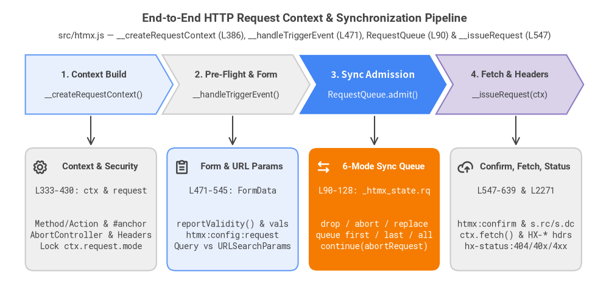
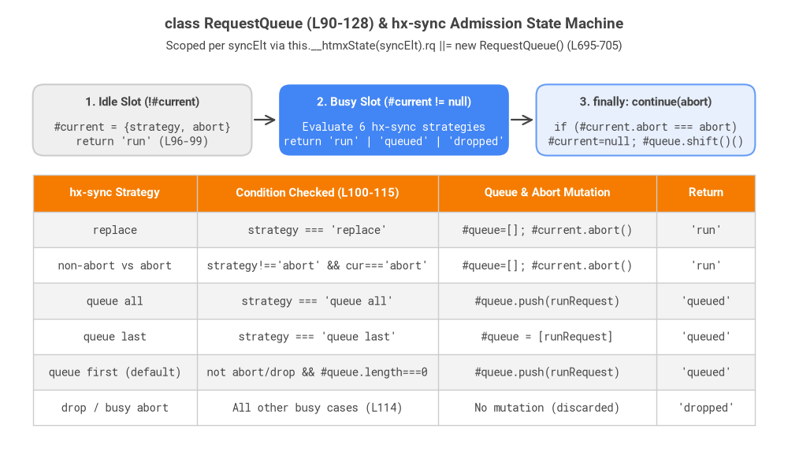
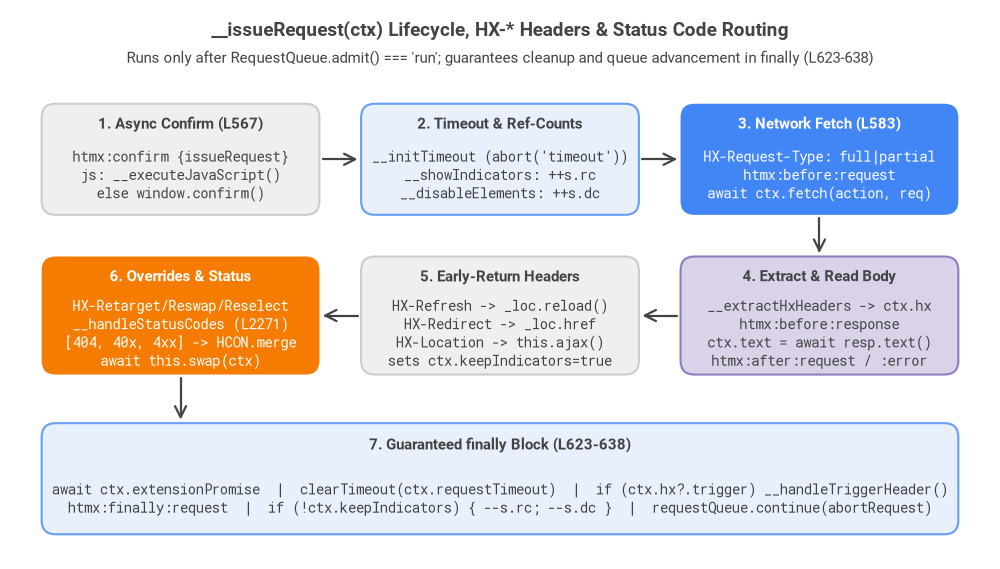

4. Fetch Context & Sync Queue
When a synthesized trigger handler fires (as detailed in Chapter 3), htmx v4.0.1 drives the HTTP lifecycle through a unified mutable Request Context (ctx) pipeline (__createRequestContext -> __handleTriggerEvent -> RequestQueue.admit -> __issueRequest, lines 90–128 and 333–705) backed by native fetch(), AbortController, and per-element synchronization queues.

Source Code
from drawlib.canvas import save, setup
from drawlib.fonts import FontRoboto, FontSourceCode
from drawlib.icons import phosphor
from drawlib.lines import line
from drawlib.shapes import rectangle
from drawlib.smartarts import ChevronProcess
from drawlib.styles import Styles
from drawlib.text import text
setup(width=144, height=70)
title_s = Styles.DarkBold.patch(text_size=13.5, text_font=FontRoboto.ROBOTO_BOLD)
sub_s = Styles.Dark.patch(text_size=10.5, text_font=FontRoboto.ROBOTO_REGULAR)
card_title_s = Styles.DarkBold.patch(text_size=11.0, text_font=FontRoboto.ROBOTO_BOLD)
code_s = Styles.Dark.patch(text_size=10.0, text_font=FontSourceCode.ROBOTO_MONO)
white_title_s = Styles.WhiteBold.patch(text_size=11.0, text_font=FontRoboto.ROBOTO_BOLD)
white_code_s = Styles.White.patch(text_size=10.0, text_font=FontSourceCode.ROBOTO_MONO)
text((72, 65.5), "End-to-End HTTP Request Context & Synchronization Pipeline", style=title_s)
text((72, 61.5), "src/htmx.js — __createRequestContext (L386), __handleTriggerEvent (L471), RequestQueue (L90) & __issueRequest (L547)", style=sub_s)
pipeline = ChevronProcess(
style=Styles.Neutral,
text_style=Styles.DarkBold.patch(text_size=11.0, text_font=FontRoboto.ROBOTO_BOLD),
description_style=Styles.Dark.patch(text_size=10.0, text_font=FontRoboto.ROBOTO_REGULAR),
corner_angle=60.0,
spacing=1.5,
flat_left_end=True,
)
pipeline.add("1. Context Build", description="__createRequestContext()", style=Styles.PrimaryNeutral)
pipeline.add("2. Pre-Flight & Form", description="__handleTriggerEvent()", style=Styles.Neutral)
pipeline.add("3. Sync Admission", description="RequestQueue.admit()", style=Styles.PrimaryFlat,
text_style=Styles.WhiteBold.patch(text_size=11.0),
description_style=Styles.White.patch(text_size=10.0))
pipeline.add("4. Fetch & Headers", description="__issueRequest(ctx)", style=Styles.SecondaryNeutral)
pipeline.draw(xy=(6, 43), width=132, height=14)
cards = [
(21.5, "Context & Security", "L333-430: ctx & request", "Method/Action & #anchor\nAbortController & Headers\nLock ctx.request.mode", Styles.Neutral, False),
(55.0, "Form & URL Params", "L471-545: FormData", "reportValidity() & vals\nhtmx:config:request\nQuery vs URLSearchParams", Styles.PrimaryNeutral, False),
(88.5, "6-Mode Sync Queue", "L90-128: _htmx_state.rq", "drop / abort / replace\nqueue first / last / all\ncontinue(abortRequest)", Styles.AccentFlat, True),
(122.0, "Confirm, Fetch, Status", "L547-639 & L2271", "htmx:confirm & s.rc/s.dc\nctx.fetch() & HX-* hdrs\nhx-status:404/40x/4xx", Styles.Neutral, False),
]
for cx, heading, fn_label, body_txt, box_style, is_focal in cards:
rectangle((cx, 20.5), width=31.0, height=29.0, style=box_style.patch(shape_r=2.0))
line((cx, 42.5), (cx, 35.5), arrow_head="->", style=Styles.DarkBold.patch(line_width=1.5))
t_style = white_title_s if is_focal else card_title_s
c_style = white_code_s if is_focal else code_s
text((cx + 2.2, 30.5), heading, style=t_style)
text((cx, 25.0), fn_label, style=c_style)
text((cx, 14.5), body_txt, style=c_style)
phosphor.gear((9.5, 30.5), width=3.8, style=Styles.DarkBold)
phosphor.clipboard_text((43.0, 30.5), width=3.8, style=Styles.DarkBold)
phosphor.arrows_left_right((76.5, 30.5), width=3.8, style=Styles.WhiteBold)
phosphor.cloud_arrow_up((110.0, 30.5), width=3.8, style=Styles.DarkBold)
save()
4.1 Request Context Compilation (__createRequestContext & __determineMethodAndAction)
Every element initialized by process() receives a bound async event handler created by __createHtmxEventHandler(elt) (lines 375–384), which wraps __createRequestContext(elt, evt) and await this.__handleTriggerEvent(ctx) inside a try / catch block that routes uncaught exceptions to htmx:error.
Resolving HTTP Method and Action URL (__determineMethodAndAction, Lines 333–351)
__determineMethodAndAction(elt, evt) {
let method = this.__attributeValue(elt, "hx-method");
let action = this.__attributeValue(elt, "hx-action", undefined, undefined, false);
if (!action) {
for (let verb of this.#verbs) {
let verbAction = this.__attributeValue(elt, "hx-" + verb, undefined, undefined, false);
if (verbAction != null) {
action = verbAction;
method = verb;
break;
}
}
}
if (this.__isBoosted(elt)) {
action ||= evt.submitter?.getAttribute?.("formAction") || elt.getAttribute(elt.matches("a") ? "href" : "action");
}
method ||= evt.submitter?.getAttribute?.("formmethod") || elt.getAttribute("method") || "GET";
return {action, method: method.toUpperCase()};
}
- Explicit
hx-action+hx-methodvs. Shorthand Verb Attributes: htmx first checkshx-action(withallowInheritance = false). If absent, it iterates throughthis.#verbs(["get", "post", "put", "patch", "delete", "query"]at line 143) and selects the first matchinghx-<verb>attribute onelt(unless explicitly inherited via:inherited). Notice that htmx v4 natively includes the HTTPQUERYverb alongside the classic five REST verbs. - Boosted Element Fallbacks (
__isBoosted(elt)): When an<a>or<form>haselt._htmx.boostedset by__maybeBoost(line 968),actionfalls back toevt.submitter?.getAttribute?.("formAction")or the element's nativehref/actionattribute. - Method Precedence: If
methodwas not determined byhx-methodorhx-<verb>, it falls back toevt.submitter?.getAttribute?.("formmethod"), thenelt.getAttribute("method"), and finally"GET", normalized via.toUpperCase().
Building ctx and Enforcing the hx-config Security Invariant (Lines 386–430)
__createRequestContext(sourceElement, sourceEvent) {
let {action, method} = this.__determineMethodAndAction(sourceElement, sourceEvent);
let [fullAction, anchor] = (action || '').split('#');
let ac = new AbortController();
let ctx = {
sourceElement,
sourceEvent,
status: "created",
select: this.__attributeValue(sourceElement, "hx-select"),
selectOOB: this.__attributeValue(sourceElement, "hx-select-oob"),
target: this.__attributeValue(sourceElement, "hx-target"),
swap: this.__attributeValue(sourceElement, "hx-swap") ?? this.config.defaultSwap,
push: this.__attributeValue(sourceElement, "hx-push-url"),
replace: this.__attributeValue(sourceElement, "hx-replace-url"),
transition: this.config.transitions,
confirm: this.__attributeValue(sourceElement, "hx-confirm"),
request: {
validate: "true" === this.__attributeValue(sourceElement, "hx-validate",
sourceElement.matches('form') && !sourceElement.noValidate && !sourceEvent.submitter?.formNoValidate ? "true" : "false",
undefined, false),
action: fullAction,
anchor,
method,
headers: this.__createCoreHeaders(sourceElement),
abort: ac.abort.bind(ac),
credentials: "same-origin",
signal: ac.signal,
mode: this.config.mode
}
};
if (sourceElement._htmx?.boosted) {
HCON.merge(sourceElement._htmx.boosted, ctx);
}
ctx.target = this.__resolveTarget(sourceElement, ctx.target);
if (ctx.target) {
ctx.request.headers["HX-Target"] = this.__buildIdentifier(ctx.target);
}
let hxConfig = this.__attributeValue(sourceElement, "hx-config");
if (hxConfig) {
HCON.merge(hxConfig, ctx.request);
ctx.request.mode = this.config.mode; // mode is security-sensitive, never allow per-element override
}
return ctx;
}
- Anchor Stripping (
#anchor, line 388):(action || '').split('#')separates the URL fragment intoctx.request.anchorbeforefetch()is called; after the DOM swap finishes,__handleAnchorScroll(ctx)(lines 1226–1230) scrollsdocument.getElementById(ctx.request.anchor)into view. - Core Request Headers (
__createCoreHeaders, lines 436–447):HX-Request: "true"HX-Source:tagName.toLowerCase()plus#${encodeURI(elt.id)}ifelt.idis present (__buildIdentifierat lines 432–434).HX-Current-URL:location.hrefAccept: "text/html"HX-Boosted: "true"(whenthis.__isBoosted(elt)is truthy)HX-Target:this.__buildIdentifier(ctx.target)added at line 420 after__resolveTargetresolvesctx.target(defaulting todocument.bodyfor boosted elements orsourceElementotherwise).HX-Request-Type:"full"ifctx.target === document.body || ctx.select, or"partial"otherwise (computed right beforefetch()at line 585 after all config hooks have run).
- Boost &
hx-configHCON Overrides (lines 415–428):- Because
hx-boostin htmx v4 accepts an HCON specification (e.g.,hx-boost="swap:outerMorph push:false"), line 416 mergessourceElement._htmx.boosteddirectly intoctxbefore resolvingctx.target. - Next,
hx-configis merged intoctx.requestviaHCON.merge(hxConfig, ctx.request)(allowing per-elementtimeout,credentials, etc.), followed immediately byctx.request.mode = this.config.mode(line 427). This security invariant prevents untrusted or injectedhx-config="mode:cors"attributes from escalatinghtmx.config.mode(which defaults to'same-origin').
- Because
4.2 Form Data Collection & Pre-Flight Pipeline (__handleTriggerEvent & __collectFormData)
Once ctx is constructed, __handleTriggerEvent(ctx) (lines 471–545) validates inputs, assembles parameters, evaluates dynamic hx-vals and hx-headers, and dispatches htmx:config:request:
Enclosing Form Rule, HTML5 Validation & Input Serialization (Lines 481–491 & 1807–1873)
- The Enclosing Form Rule (lines 481–487):
Forlet usesQueryParams = /GET|DELETE/.test(ctx.request.method); let form = usesQueryParams ? (elt.matches('form') ? elt : null) : (elt.form || elt.closest("form"))GETandDELETErequests, htmx only serializes a<form>if the triggered element is itself the<form>(elt.matches('form')). In contrast, state-mutating / payload verbs (POST,PUT,PATCH,QUERY) automatically locate and serialize any enclosing form viaelt.form || elt.closest("form"). - HTML5 Constraint Validation (
__collectFormData, lines 1807–1831):- When
ctx.request.validateistrue(defaulting totrueon<form>withoutnovalidateorsubmitter.formNoValidate), htmx invokesform.reportValidity()(orelt.reportValidity()/node.reportValidity()onhx-includetargets). If validation fails,__collectFormDatareturnsundefinedand__handleTriggerEventaborts cleanly at line 491. - Submitter Self-Inclusion (
#4073, line 1811): When a<button type="submit" name="cmd" value="save" hx-post="/save">inside a form triggers its ownclickhandler rather than asubmitevent,evt.submitteris undefined. Line 1811 setssubmitter ??= (form && elt.type === 'submit') ? elt : null, ensuring the button'sname=valuepair is appended toformData(lines 1819–1822).
- When
- Deduplicated Input Harvesting (
__addInputValues, lines 1833–1873):- Maintains an
included = new Set(...)initialized withform.elementsso no input is serialized twice whenhx-includeoverlaps with the enclosing form. - Custom Elements & Buttons (line 1836): If
tag === 'BUTTON' || tag.includes('-')(any Web Component custom element), htmx treatseltas a single atomic control (inputs = [elt]) rather than querying internal[name]descendants. Furthermore, ifArray.isArray(input.value)(line 1864), each array element is appended individually toFormData. - Non-Form Containers on
GETvsPOST(line 1838): Ifeltis a<div>without a form,GETsends no child inputs (!isGetis false), whereasPOSTon a non-bodycontainer collectsthis.__queryEltAndDescendants(elt, '[name]:not(button)'). - Standard HTML controls handle
checkbox/radio(including custom elements with'checked' in input),input[type="file"](input.files), andselect-multiple(input.selectedOptions).
- Maintains an
Conditional Async hx-vals / hx-headers and Action Interception (Lines 492–544)
- Zero-Microtask HCON Fast Path (
__getAttributeObject, lines 1875–1893): Bothhx-valsandhx-headersare parsed via__getAttributeObject. When the attribute has nojs:orjavascript:prefix, it parses synchronously viaHCON.parse(hxAttr)and returnsundefined;__handleTriggerEventchecksif (valsResult) await valsResult(line 496) andif (headersResult) await headersResult(line 506) so static HCON values never yield to the Promise microtask queue. - Pre-Flight Escape Hatches (lines 515–522):
if (!this.__trigger(elt, "htmx:config:request", {ctx: ctx})) return— Extensions or listeners can mutatectx.requestor callevt.preventDefault()to cancel.if (ctx.request.method === 'DIALOG') return— Allows native<form method="dialog">to close<dialog>elements without firing a network request.js:/javascript:Action URLs (lines 518–522): Ifctx.request.actionstarts withjs:orjavascript:, htmx convertsctx.request.bodyinto a plain object viaObject.fromEntries(ctx.request.body), awaitsthis.__executeJavaScript(ctx.sourceElement, data, javascriptContent, false), and returns without touching the network.
- Query String vs Body Encoding (lines 523–542):
- For
GETandDELETE(usesQueryParams), parameters inctx.request.bodyreplace matching keys inurl.searchParams(url.searchParams.delete(key)followed byappend). Ifurl.origin === location.origin,ctx.request.actionis kept as a relative path (url.pathname + url.search), andctx.request.bodyis set tonull. - For other verbs, unless
hx-encodingorform.enctypeis"multipart/form-data",ctx.request.body(FormData) is converted intonew URLSearchParams(ctx.request.body)(application/x-www-form-urlencoded).
- For
4.3 The RequestQueue Admission State Machine (class RequestQueue & hx-sync)
When __handleTriggerEvent calls __issueRequest(ctx) (line 547), htmx resolves the element's synchronization queue via __determineSyncStrategy(elt) and __getRequestQueue(elt) (lines 688–705) and gates execution on requestQueue.admit(...) (lines 90–128).

Source Code
from drawlib.canvas import save, setup
from drawlib.fonts import FontRoboto, FontSourceCode
from drawlib.lines import line
from drawlib.shapes import rectangle
from drawlib.smartarts import Table
from drawlib.styles import Colors, Styles
from drawlib.text import text
setup(width=144, height=84)
title_s = Styles.DarkBold.patch(text_size=13.5, text_font=FontRoboto.ROBOTO_BOLD)
sub_s = Styles.Dark.patch(text_size=10.5, text_font=FontRoboto.ROBOTO_REGULAR)
hdr_s = Styles.DarkBold.patch(text_size=11.0, text_font=FontRoboto.ROBOTO_BOLD)
code_s = Styles.Dark.patch(text_size=10.0, text_font=FontSourceCode.ROBOTO_MONO)
white_hdr_s = Styles.WhiteBold.patch(text_size=11.0, text_font=FontRoboto.ROBOTO_BOLD)
white_code_s = Styles.White.patch(text_size=10.0, text_font=FontSourceCode.ROBOTO_MONO)
text((72, 79.5), "class RequestQueue (L90-128) & hx-sync Admission State Machine", style=title_s)
text((72, 75.5), "Scoped per syncElt via this.__htmxState(syncElt).rq ||= new RequestQueue() (L695-705)", style=sub_s)
# Top Row: 3 State Machine Lifecycles
rectangle((26, 62), width=40, height=13, style=Styles.Neutral.patch(shape_r=2.0))
text((26, 65.2), "1. Idle Slot (!#current)", style=hdr_s)
text((26, 59.5), "#current = {strategy, abort}\nreturn 'run' (L96-99)", style=code_s)
rectangle((72, 62), width=42, height=13, style=Styles.PrimaryFlat.patch(shape_r=2.0))
text((72, 65.2), "2. Busy Slot (#current != null)", style=white_hdr_s)
text((72, 59.5), "Evaluate 6 hx-sync strategies\nreturn 'run' | 'queued' | 'dropped'", style=white_code_s)
rectangle((118, 62), width=40, height=13, style=Styles.PrimaryNeutral.patch(shape_r=2.0))
text((118, 65.2), "3. finally: continue(abort)", style=hdr_s)
text((118, 59.5), "if (#current.abort === abort)\n#current=null; #queue.shift()()", style=code_s)
line((46.5, 62), (50.5, 62), arrow_head="->", style=Styles.DarkBold.patch(line_width=1.6))
line((93.5, 62), (97.5, 62), arrow_head="->", style=Styles.DarkBold.patch(line_width=1.6))
# Bottom Table: 6 Strategies in RequestQueue.admit() when #current is active
data = [
["hx-sync Strategy", "Condition Checked (L100-115)", "Queue & Abort Mutation", "Return"],
["replace", "strategy === 'replace'", "#queue=[]; #current.abort()", "'run'"],
["non-abort vs abort", "strategy!=='abort' && cur==='abort'", "#queue=[]; #current.abort()", "'run'"],
["queue all", "strategy === 'queue all'", "#queue.push(runRequest)", "'queued'"],
["queue last", "strategy === 'queue last'", "#queue = [runRequest]", "'queued'"],
["queue first (default)", "not abort/drop && #queue.length===0", "#queue.push(runRequest)", "'queued'"],
["drop / busy abort", "All other busy cases (L114)", "No mutation (discarded)", "'dropped'"],
]
tbl = Table(
cell_style=Styles.White,
text_style=Styles.Dark.patch(text_size=10.0, text_font=FontSourceCode.ROBOTO_MONO),
header_cell_style=Styles.AccentFlat,
header_text_style=Styles.WhiteBold.patch(text_size=10.5, text_font=FontRoboto.ROBOTO_BOLD),
border_style=Styles.Neutral.patch(line_width=1.0),
has_header=True,
)
tbl.set_style_cell_evenodd(
even_color=Colors.White,
even_text_style=Styles.Dark.patch(text_size=10.0, text_font=FontSourceCode.ROBOTO_MONO),
odd_color=Colors.Light,
odd_text_style=Styles.Dark.patch(text_size=10.0, text_font=FontSourceCode.ROBOTO_MONO),
)
tbl.set_style_cell_header(
background_color=Colors.Accent,
text_style=Styles.WhiteBold.patch(text_size=10.5, text_font=FontRoboto.ROBOTO_BOLD),
)
tbl.draw_flexible(
xy=(6.0, 52.0),
column_widths=[30.0, 44.0, 40.0, 18.0],
row_heights=[6.8, 6.5, 6.5, 6.5, 6.5, 6.5, 6.5],
data=data,
align="top_left",
)
save()
Scoping RequestQueue via hx-sync (Lines 688–705)
hx-sync accepts three syntactic forms:
- Strategy only (
hx-sync="replace"):__getRequestQueuesees thathxSyncmatches/^(drop|abort|replace|queue)/, keepssyncElt = elt, and__determineSyncStrategyreturns"replace". - Selector only (
hx-sync="closest form"):__getRequestQueueresolvessyncElt = this.__findOrWarn(elt, "closest form", "hx-sync") || elt, while__determineSyncStrategyfalls back to the default"queue first". - Selector + Strategy (
hx-sync="#search-form:abort"): Splits on the last colon (hxSync.lastIndexOf(":")) so CSS pseudo-classes inside the selector (e.g.,form:first-of-type:replace) remain intact! TheRequestQueueinstance is lazily created onthis.__htmxState(syncElt).rq ||= new RequestQueue().
The RequestQueue Implementation (Lines 90–128)
class RequestQueue {
#current = null
#queue = []
/** Returns "run", "queued", or "dropped" */
admit(strategy, runRequest, abortRequest) {
if (!this.#current) {
this.#current = {strategy, abort: abortRequest}
return "run"
}
if (strategy === "replace" || (strategy !== "abort" && this.#current.strategy === "abort")) {
this.#queue = []
this.#current.abort?.()
this.#current = {strategy, abort: abortRequest}
return "run"
}
if (strategy === "queue all") {
this.#queue.push(runRequest)
} else if (strategy === "queue last") {
this.#queue = [runRequest]
} else if (strategy !== "abort" && strategy !== "drop" && this.#queue.length === 0) {
// default queue first
this.#queue.push(runRequest)
} else {
return "dropped"
}
return "queued"
}
continue(abortRequest) {
if (this.#current?.abort !== abortRequest) return
this.#current = null // free current slot
this.#queue.shift()?.() // run next request
}
abort() {
this.#current?.abort?.()
}
}
Two subtle concurrency guarantees in RequestQueue deserve special attention:
- Asymmetric
abortPreemption (line 100): When an element specifieshx-sync="closest form:abort"(such as an autosave or background validation input inside a form), its in-flight request is tagged withthis.#current.strategy === "abort". If anotherabortrequest arrives while#currentis active, it falls through to line 114 and returns"dropped". However, if the user submits the form with the default"queue first"strategy (strategy !== "abort" && this.#current.strategy === "abort"), line 100 immediately aborts the in-flightabortrequest and runs the form submission right away instead of queuing behind the background check! - Ownership-Verified Slot Release (
continue(abortRequest), lines 119–123): When an aborted request'sfetch()rejects and enters itsfinallyblock (line 637), areplacerequest may have already taken ownership ofthis.#current. By comparingif (this.#current?.abort !== abortRequest) return, the replaced request'sfinallyblock is prevented from clearing the new request's#currentslot or prematurely shifting#queue.
4.4 Async htmx:confirm, Ref-Counted Indicators, fetch() & Status Routing (__issueRequest)
Once requestQueue.admit(syncStrategy, () => this.__issueRequest(ctx), abortRequest) returns "run" (lines 555–559), __issueRequest(ctx) transitions ctx.status = "issuing" and executes the network and response header pipeline.

Source Code
from drawlib.canvas import save, setup
from drawlib.fonts import FontRoboto, FontSourceCode
from drawlib.lines import line
from drawlib.shapes import rectangle
from drawlib.styles import Styles
from drawlib.text import text
setup(width=144, height=82)
title_s = Styles.DarkBold.patch(text_size=13.5, text_font=FontRoboto.ROBOTO_BOLD)
sub_s = Styles.Dark.patch(text_size=10.5, text_font=FontRoboto.ROBOTO_REGULAR)
hdr_s = Styles.DarkBold.patch(text_size=11.0, text_font=FontRoboto.ROBOTO_BOLD)
code_s = Styles.Dark.patch(text_size=10.0, text_font=FontSourceCode.ROBOTO_MONO)
white_hdr_s = Styles.WhiteBold.patch(text_size=11.0, text_font=FontRoboto.ROBOTO_BOLD)
white_code_s = Styles.White.patch(text_size=10.0, text_font=FontSourceCode.ROBOTO_MONO)
text((72, 77.5), "__issueRequest(ctx) Lifecycle, HX-* Headers & Status Code Routing", style=title_s)
text((72, 73.5), "Runs only after RequestQueue.admit() === 'run'; guarantees cleanup and queue advancement in finally (L623-638)", style=sub_s)
# Row 1: Pre-Fetch (Left -> Center -> Right)
rectangle((26, 59), width=40, height=16, style=Styles.Neutral.patch(shape_r=2.0))
text((26, 64.0), "1. Async Confirm (L567)", style=hdr_s)
text((26, 56.8), "htmx:confirm {issueRequest}\njs: __executeJavaScript()\nelse window.confirm()", style=code_s)
rectangle((72, 59), width=40, height=16, style=Styles.PrimaryNeutral.patch(shape_r=2.0))
text((72, 64.0), "2. Timeout & Ref-Counts", style=hdr_s)
text((72, 56.8), "__initTimeout (abort('timeout'))\n__showIndicators: ++s.rc\n__disableElements: ++s.dc", style=code_s)
rectangle((118, 59), width=40, height=16, style=Styles.PrimaryFlat.patch(shape_r=2.0))
text((118, 64.0), "3. Network Fetch (L583)", style=white_hdr_s)
text((118, 56.8), "HX-Request-Type: full|partial\nhtmx:before:request\nawait ctx.fetch(action, req)", style=white_code_s)
line((46.5, 59), (51.5, 59), arrow_head="->", style=Styles.DarkBold.patch(line_width=1.6))
line((92.5, 59), (97.5, 59), arrow_head="->", style=Styles.DarkBold.patch(line_width=1.6))
# Row 2: Response Processing (Right -> Center -> Left)
line((118, 50.5), (118, 45.5), arrow_head="->", style=Styles.DarkBold.patch(line_width=1.6))
rectangle((118, 36.5), width=40, height=17, style=Styles.SecondaryNeutral.patch(shape_r=2.0))
text((118, 42.0), "4. Extract & Read Body", style=hdr_s)
text((118, 34.0), "__extractHxHeaders -> ctx.hx\nhtmx:before:response\nctx.text = await resp.text()\nhtmx:after:request / :error", style=code_s)
rectangle((72, 36.5), width=40, height=17, style=Styles.Neutral.patch(shape_r=2.0))
text((72, 42.0), "5. Early-Return Headers", style=hdr_s)
text((72, 34.0), "HX-Refresh -> _loc.reload()\nHX-Redirect -> _loc.href\nHX-Location -> this.ajax()\nsets ctx.keepIndicators=true", style=code_s)
rectangle((26, 36.5), width=40, height=17, style=Styles.AccentFlat.patch(shape_r=2.0))
text((26, 42.0), "6. Overrides & Status", style=white_hdr_s)
text((26, 34.0), "HX-Retarget/Reswap/Reselect\n__handleStatusCodes (L2271)\n[404, 40x, 4xx] -> HCON.merge\nawait this.swap(ctx)", style=white_code_s)
line((97.5, 36.5), (92.5, 36.5), arrow_head="->", style=Styles.DarkBold.patch(line_width=1.6))
line((51.5, 36.5), (46.5, 36.5), arrow_head="->", style=Styles.DarkBold.patch(line_width=1.6))
# Row 3: Finally Block (Full Width)
line((26, 27.5), (26, 21.5), arrow_head="->", style=Styles.DarkBold.patch(line_width=1.6))
rectangle((72, 13.0), width=132, height=16, style=Styles.PrimaryNeutral.patch(shape_r=2.0))
text((72, 17.8), "7. Guaranteed finally Block (L623-638)", style=hdr_s)
text((72, 10.2), "await ctx.extensionPromise | clearTimeout(ctx.requestTimeout) | if (ctx.hx?.trigger) __handleTriggerHeader()\nhtmx:finally:request | if (!ctx.keepIndicators) { --s.rc; --s.dc } | requestQueue.continue(abortRequest)", style=code_s)
save()
Why htmx:confirm, Timeouts, and Indicators Run After Queue Admission
- Async Confirmation (
ctx.confirm, lines 567–576):
Becauseif (ctx.confirm) { let confirmed = await new Promise(resolve => { let detail = {ctx, issueRequest: () => resolve(true), dropRequest: () => resolve(false)}; if (this.__trigger(elt, "htmx:confirm", detail)) { let js = this.__extractJavascriptContent(ctx.confirm); resolve(js ? this.__executeJavaScript(elt, {ctx}, js, true) : window.confirm(ctx.confirm)); } }); if (!confirmed) return; }htmx:confirmruns afterrequestQueue.admit()returns"run", queued requests never pop up overlapping confirmation dialogs simultaneously. Custom modal listeners can callevt.preventDefault()onhtmx:confirmand later invokeevt.detail.issueRequest()orevt.detail.dropRequest()asynchronously; ifconfirmedisfalse, thefinallyblock still runsrequestQueue.continue(abortRequest)to unblock the next queued request. - Timeout Timer (
__initTimeout, lines 679–686): Starts after confirmation resolves (ctx.requestTimeout = setTimeout(() => ctx.request?.abort?.('timeout'), timeout)), so time spent by the user reading a confirmation dialog never counts againstdefaultTimeout(60000ms). Notice incatch (error)(line 622) that normalAbortErrorcancellations are silent, whereasctx.request.signal.reason === 'timeout'explicitly dispatcheshtmx:error. - Reference-Counted Indicators & Disabled Elements (
s.rc&s.dc, lines 1757–1805):__showIndicators(ctx)resolveshx-indicator(or[elt]when omitted andelt !== document.body), incrementsthis.__htmxState(indicator).rc = (s.rc || 0) + 1, and addshtmx-request.__disableElements(ctx)resolveshx-disable, incrementsthis.__htmxState(el).dc = (s.dc || 0) + 1, and setsel.disabled = true.- In
finally,__hideIndicatorsand__enableElementsdecrement--s.rcand--s.dc, only removinghtmx-requestor restoringdisabled = falsewhen the reference count reaches<= 0(so concurrent requests sharing a global spinner never flicker).
Response Header Normalization (__extractHxHeaders) & Early-Return Redirects
Immediately after let response = await ctx.fetch(ctx.request.action, ctx.request) resolves (line 588), __extractHxHeaders(ctx) (lines 643–650) scans ctx.response.raw.headers for any header starting with hx-, strips the hx- prefix and hyphens, and stores it in lowercase on ctx.hx:
| HTTP Response Header | ctx.hx Property |
Processing Stage & Behavior (src/htmx.js) |
|---|---|---|
HX-Refresh: true |
ctx.hx.refresh |
__handleHeadersAndMaybeReturnEarly (L655): Calls this._loc.reload(), sets ctx.keepIndicators = true, and skips swap. |
HX-Redirect: <url> |
ctx.hx.redirect |
__handleHeadersAndMaybeReturnEarly (L659): Sets this._loc.href = ctx.hx.redirect, sets ctx.keepIndicators = true, and skips swap. |
HX-Location: <spec> |
ctx.hx.location |
__handleHeadersAndMaybeReturnEarly (L663): Parses HCON or string path, forwards ctx.indicators and ctx.disabledElements into opts, invokes this.ajax('GET', path, opts), and sets ctx.keepIndicators = true so the follow-up ajax() call inherits the active indicators seamlessly. |
HX-Retarget: <sel> |
ctx.hx.retarget |
Pre-swap override (L610): Sets ctx.target = ctx.hx.retarget (resolved later in __processMainSwap). |
HX-Reswap: <spec> |
ctx.hx.reswap |
Pre-swap override (L611): Sets ctx.swap = ctx.hx.reswap. |
HX-Reselect: <sel> |
ctx.hx.reselect |
Pre-swap override (L612): Sets ctx.select = ctx.hx.reselect. |
HX-Push-Url / HX-Replace-Url |
ctx.hx.pushurl / ctx.hx.replaceurl |
Consumed during swap(ctx) in __handleHistoryUpdate(ctx) (covered in Chapter 5). |
HX-Trigger: <spec> |
ctx.hx.trigger |
Executed in finally (L628–630) via __handleTriggerHeader(ctx.hx.trigger, ctx.sourceElement) (L874–888), supporting both comma-separated event names and HCON objects ({myEvent: {level: "info", target: "#toast"}}). |
Hierarchical Status Code Routing (__handleStatusCodes, Lines 2271–2286)
Right before calling await this.swap(ctx) (line 616), htmx invokes __handleStatusCodes(ctx) to apply declarative HTTP status code rules:
__handleStatusCodes(ctx) {
let status = ctx.response.raw.status;
let noSwapStrings = this.config.noSwap.map(x => x + "");
let str = status + ""
for (let pattern of [str, str.slice(0, 2) + 'x', str[0] + 'xx']) {
if (noSwapStrings.includes(pattern)) {
ctx.swap = "none";
return
}
let statusValue = this.__attributeValue(ctx.sourceElement, "hx-status:" + pattern);
if (statusValue) {
HCON.merge(statusValue, ctx);
return;
}
}
}
- 3-Tier Specificity Cascade (
[str, str.slice(0, 2) + 'x', str[0] + 'xx']): For a status code such as404, htmx checks patterns in order of decreasing specificity: exact"404", decade wildcard"40x", and class wildcard"4xx". config.noSwapMatching: At each specificity tier, htmx first checksthis.config.noSwap(which defaults to[204, 304]at line 203). If matched,ctx.swap = "none"is set and the loop returns immediately.- Full Context Mutation via
HCON.merge(statusValue, ctx): If the element (or an ancestor via:inherited) defineshx-status:<pattern>(for example,hx-status:422="target:#form-errors swap:innerHTML select:#errors"orhx-status:5xx="swap:none confirm:false"), htmx merges that HCON specification directly into the top-levelctxobject and returns before handingctxtoawait this.swap(ctx)(covered in Chapter 5).